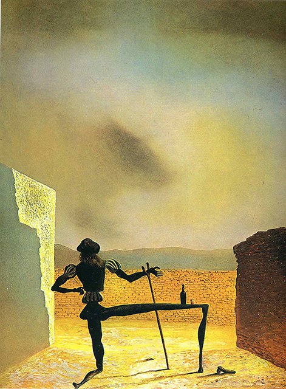

The Ghost of Vermeer van Delft which Can Be Used as a Table
Salvidor Dali

Surrealism
The title refers to the Dutch painter Johannes Vermeer and the image of Vermeer viewed from his back is a reference to Vermeer's painting The Art of Painting. In this image Vermeer is represented as a dark spindly figure in a kneeling position. The figure’s outstretched leg serves as a table top surface, on which sits a bottle and a small glass. This leg tapers to a baluster-like stub, however there is a shoe nearby. One wrist of the Vermeer figure rests on a crutch-like support. Images of anthropomorphic furniture as well as crutch-like objects are common
in this period of Dalí’s career.1934